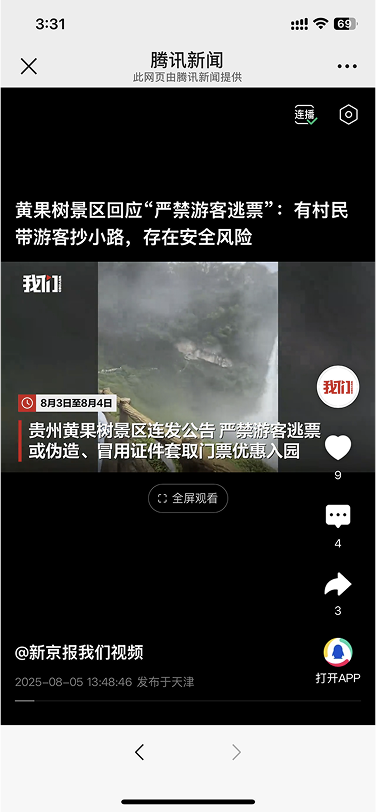
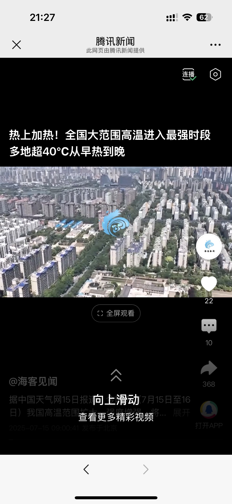
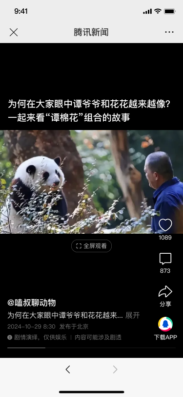
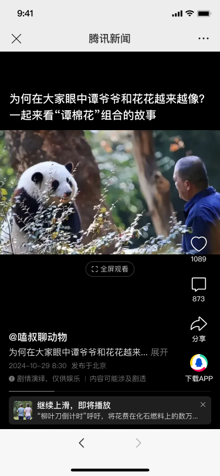

03 / BUSINESS REQUIREMENT
Project 3.
微信插件
沉浸流上滑引导样式调整
项目背景：微信容器底部原生控件暗示“不能上滑”，推荐流触达受阻。
- 周期
- 8.4—8.8
- 角色
- Interaction Design
- 交付
- UX Flow / Visual Spec / Experiment
01 / CONTEXT
项目背景：微信容器底部原生控件暗示“不能上滑”，推荐流触达受阻

“不能上滑”微信底部原生控件带来的错误暗示
推荐流触达受阻部分用户只消费首条视频即退出
更明确，拉流量，提兴趣
更明确，拉流量，提兴趣
02 / DESIGN SOLUTION
设计方案
保留插件原生手势，去掉插件强反馈蓝条。

更强引导，更多信息
向上滑动
- 下一条封面
- 下一条信息内容
- 吸引阅读兴趣
- 自主关闭
03 / OUTCOME
成果
信息量充足、更优使用体验、个性化推荐。更优使用体验
个性化推荐
上线数据
+9.7369%分享点击 UV
+2.2204%赞点击 UV
消费指标暂未见显著变化：总消费 PVVV +0.2190%，沉浸页有效时长 VV +0.2057%，人均播放时长 +0.2411%。